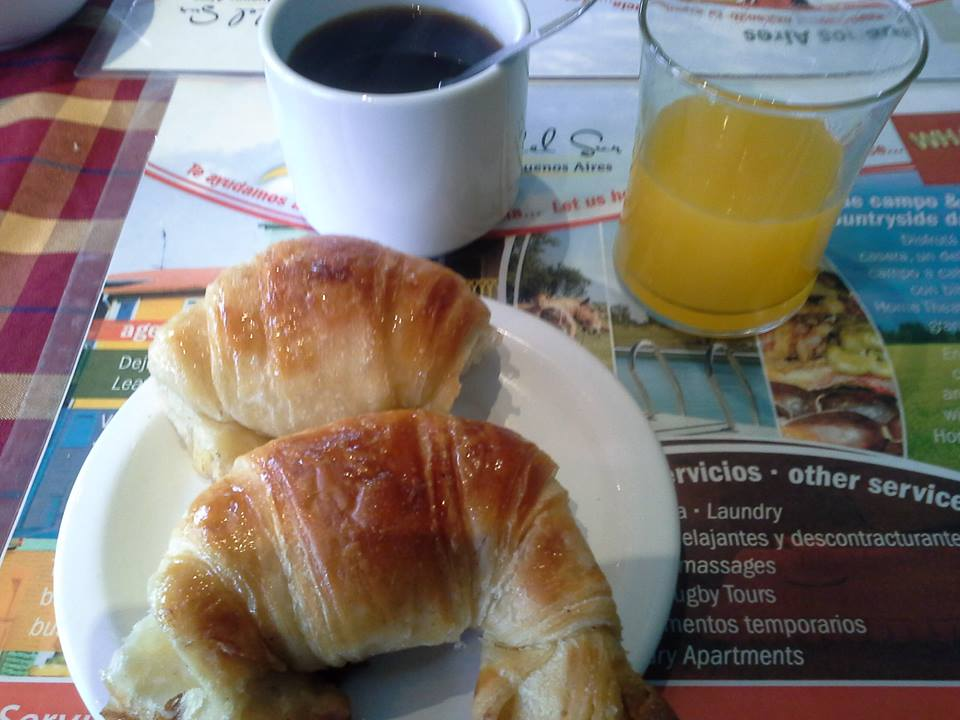

1. In Poznań, Poland.
I wouldn’t be me if I didn’t put my hometown in the very first place, but there’s a very good reason for that. I still remember when I moved here many years ago and for the first time celebrated the Polish Independence Day (11 November) in Poznań. While it’s usually a pretty serious holiday all around Poland, in Poznań this is also a joyful and festive event as this day is also the celebration of Saint Martin (Saint Martin street is also the main street in the city centre).
This is the day when you MUST eat rogale marcińskie (St. Martin’s croissants) which are delicious! Huge, heavy, very sweet and filled with white poppy seeds, walnuts or almonds, they’re something everybody in the city buys and eats on that day! Go to any bakery and on that day you’re not likely to find any pastries, doughnuts or anything else, just croissants.
On this day I meet with my friends, we buy different version of croissants and we share them over the coffee, and spent the afternoon talking.

As the legend goes:
At the end of the 19th century the rector of St. Martin’s parish preached the believers asking for some good deeds for the poor. A confectionery worker present at the mass convinced his boss to revive the tradition of baking the rogale: many years before there lived St. Martin, a man of deep faith and good heart. Once, as he was riding, his white horse lost its horseshoe that was picked up by a baker who made a croissant (in the shape of a horseshoe). That’s how the rogale appeared in Poznań: the rich bought them, the poor got them.
If you’re visiting Poland in November, Poznań is the place where you should be on the 11th of November to watch the parade with St Martin riding on a white horse, to stroll the streets full of people, to eat rogale, to see the fireworks. A really wonderful day!


2. In Buenos Aires, Argentina.
Medialunas or half moons – isn’t it just a great name for something you’re going to eat for your breakfast? There are small, moist, covered with a light syrup. Cafe con leche y dos medialunas (coffee with mild and two croissants) was my usual breakfast when I stayed in Buenos Aires for a week – an ideal beginning of the day!
Medialunas are small so you can eat even two or three if you really like them. They can be de grasa (with lard) or de manteca (with butter) and the Porteños (people living in Buenos aires) can’t sometimes agree which are beter. The ones with butter are definitely more popular – it might be because they’re easier to make.

3. In Paris, France.
David Lebovitz wrote on his blog: Truth is, I don’t eat croissants very often for the simple reason that I don’t like to get dressed until I’ve had my morning coffee & toast. So having one is a relatively big deal for me, since croissants are only good early in the day: I refuse to eat one after 11am if I can help it. Like anything made with copious amounts of butter, they don’t get better the longer they’ve been out of a hot oven.
When I first went to France I was surprised by sweet breakfasts I got there – before that I always tought breakfast should be big to fill you up for half of the day, and a croissant is good but just for the afternoon tea. Well, I admit, I still think that, but when on holidays I don’t mind a light sweet breakfast with a cup of coffee – that’s a very good beginning of a sightseeing day.
The real good croissant but be a croissant au beurre (with butter) not an ordinary croissant made with margarine which will change a delicious treat into an average snack.
It’s ages since I last visited Paris, so the cover of David Lebovitz’s book will be an illustration here – it’s on my shelf reminding me I should visit Paris again!
Whatever pâtisserie you visit, be sure to only ingest a true croissant au beurre, which has that unmistakable smell of deeply-toasted, caramelized-crunchy French beurre. Stay away from croissants ordinaires, which are made with margarine and are, oddly enough, usually crescent-shaped, but to the extreme.

The origin of croissants
There are many theories but the most popular one is connected with the siege of Vienna in 1683 and teh defeat of the Ottomans by Christan forces. To celebrate the victory over Ottomans, the Viennese bakers invented a brioche in the shape of a croissant as the reference to the crescent of the Ottoman flags – who wouldn’t like to take a bite of the enemy?
Some time later the French change the dough while keeping the shape and that the beginning of croissants as we know them today.
So, have you been to any of the cities I mentioned?
Have you tried any croissants? Or have you tried better ones and you can recommend some place to me?

{kind=link}